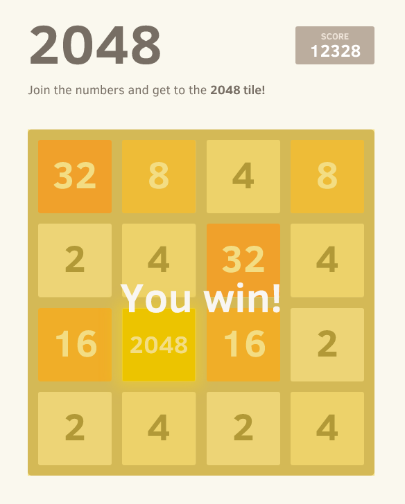

18
This is a single-player puzzle game created in March 2014 by 19-year-old Italian web developer Gabriele Cirulli, who created the game in a single weekend as a test to see if he could program a game from scratch, describing it as a clone of an app by Veewo Studios. Gabrielle was surprised when his game received over 4 million visitors in less than a week, especially since it was just a weekend project. 'It was a way to pass the time', he said. Spinoffs of this game include versions with elements from 'Doge', 'Doctor Who', 'Flappy Bird' and Tetris. Identify.
